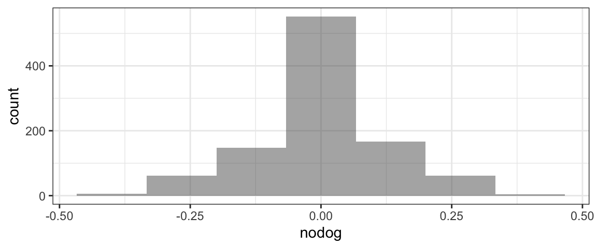
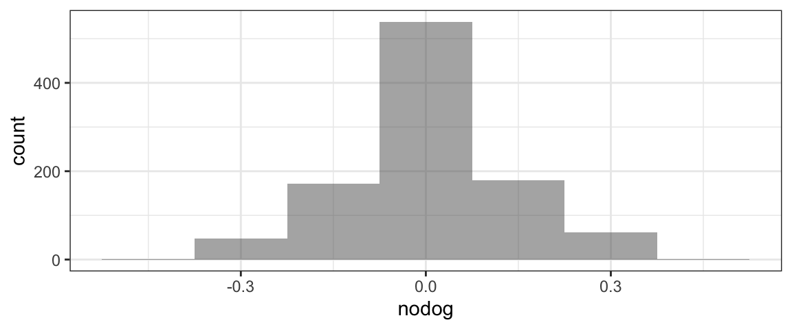
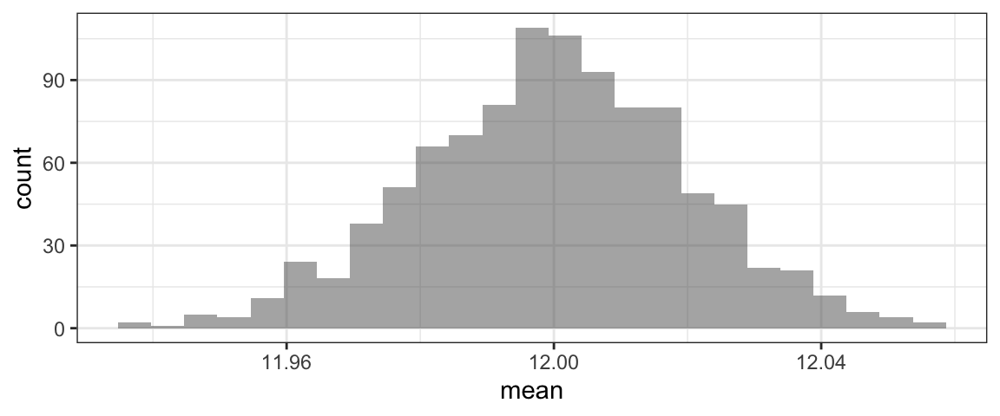

502 People were given 2 sets of photos of owner/dog pairs - one really owner-dog, and one just a random person + dog – and asked to choose the real pair. The sample statistic was the proportion correct which was 0.8. We want to test: \[H_0: p = 0.5\] \[H_A: p \neq 0.5\]
So we want many sample proportions from a hypothetical population that is like the real sample as much as possible, except that \(H_0\) is true, so \(p=0.5\).
So notice that the prob input to rflip matches the null hypothesis, and not the sample stat.
RSD1 <- do(1000)*rflip(n = 502, prob=0.5)
head(RSD1) #to see variable namesgf_histogram(~prop, data=RSD1)Once we have the randomization distribution, we need to find the p-value: the probability of getting a sample stat \(\hat{p}\) at least as extreme as 0.8, from the samples in the randomization distribution.
p.value1 <- prop(~prop >= 0.8, data=RSD1)
#because alternate is 2-sided:
# we need both "tails"...
# a value of 0.2 is as far from the H0 value of 0 as 0.8 is!
p.value2 <- prop(~prop <= 0.2, data=RSD1)
p.valueA <- p.value1 + p.value2
p.valueA## prop_TRUE
## 0Alternatively, we could just double the one-sided p-value, because the sampling distribution (should be) symmetric:
p.valueB <- 2*prop(~prop >= 0.8, data=RSD1)
p.valueB## prop_TRUE
## 0The values should be almost the same. Here, what does it mean to get a p-value of 0? A value as extreme as the sample stat was never seen in the randomizations! However, we only did 1,000. So instead of reporting a p-value of 0, it would be better to say that the p-value is less than 0.001.
Is the proportion marmots who whistle different when they encounter hikers with dogs, rather than those without?
We want to test: \[H_0: p_{dog} - p_{no dog} = 0\] \[H_1: p_{dog} - p_{no dog} \neq 0\]
First, we will read in the data and compute the sample stat.
marmot <- read.csv(file='http://sldr.netlify.com/data/marmot.csv')
#get a table of proportion whistles by hiker type:
tally(~whistle | hiker, data=marmot, format='prop')## hiker
## whistle dog nodog
## no 0.05 0.40
## yes 0.95 0.60#what about just the SECOND ROW of the table (where whistle='yes')?
tally(~whistle | hiker, data=marmot, format='prop')[2,]## dog nodog
## 0.95 0.60#so what is the sample difference in proportions
# (from the real data)?
diff(tally(~whistle | hiker, data=marmot, format='prop')[2,])## nodog
## -0.35Now do the randomization, computing the same quantity (difference in proportion whistlers, by hiker type) but with shuffled dog/no dog hiker labels:
RSD2 <- do(1000)*diff(tally(~whistle | shuffle(hiker), data=marmot, format='prop')[2,])
#see variable names:
head(RSD2)gf_histogram(~nodog, data=RSD2, bins=7)
p.value <- 2*prop(~nodog <= -0.35, data=RSD2)
p.value## prop_TRUE
## 0.02Subway claims to sell foot-long subs…but are they really? Some people brought a class-action lawsuit against Subway alleging that their subs were really less than a foot long. They might want to use data on the measured length of a bunch of Subway subs to test: \[H_0: \mu = 12\] \[H_1: \mu < 12\]
(where \(\mu\) is the true overall mean of all Subway subs in the world.) They chose a one-sided alternate because it won’t help the law suit at all if the subs are actually bigger than Subway claims – the claimants only care if they are shorter!
subway <- read.csv(file='http://sldr.netlify.com/data/subway.csv')
head(subway) #to see variable namesmean(~length, data=subway)## [1] 11.2999#make a new dataset with mean length 12
subway$length12 <- subway$length + 0.7
RSD3 <- do(1000)*mean(~length12, data=resample(subway))
head(RSD3)gf_histogram(~mean, data=RSD3)
#find p-value: one-sided
prop(~mean <= 11.3, data=RSD3)## prop_TRUE
## 0#find p-value: 2-sided
2*prop(~mean <= 11.3, data=RSD3)## prop_TRUE
## 0For example, if you measure the weight of 100 women at the start of pregnancy and then one year after birth, and compute the difference for each person, you might be interested in the mean of those differences. Or if you study 50 bee hives and for each one, find the difference in proportion drones (male bees) in summer and winter, you might be interested in testing whether the mean seasonal difference in proportion drones, averaged over the 50 hives, is 0 or not.
Paired data is often before and after data. It can be stored in a format with three columns: two with different measurements of the same variable, and one with the difference between them for each row.
In class, we considered an experiment with marmots. Each marmot was tested in two experiments: once it was approached by a hiker without a dog, and once by a hiker with a dog. The researchers recorded the distance which the marmot ran away in each experiment. The variable of interest was the difference in flight distance with/without a dog; the parameter of interest was the true population mean difference in flight distance, \(D = \mu_{diff}\) where \(\mu_{diff}\) is the mean of differences in flight distance for all marmots in the population.
marmot2 <- read.csv(file='http://sldr.netlify.com/data/marmot2.csv')
#sample statistic
mean(~ddist, data=marmot2)## [1] 47.21818#rand. dist
RSD4 <- do(1000)* mean(~ddist*
sample( c(-1,1) ,
size=nrow(marmot2),
replace=TRUE),
data=marmot2)
gf_histogram(~mean, data=RSD4)
#p-value:
prop(~mean >= 47, data=RSD4)*2## prop_TRUE
## 0As usual, if the computed p-value is 0, we can report it to be "less than [1/number of randomizations we did]*[2 if H1 is 2-sided]" so here, the p-value must be less than 2/10,000 = 0.0002.
There are a few important things to include when reporting the results of a hypothesis test.